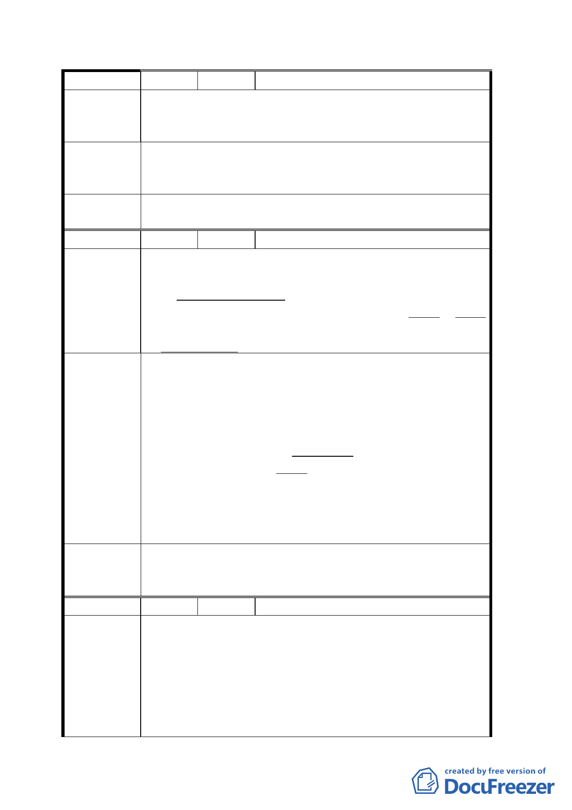

編 號 ６ 陳情人 呂嘉福
貴陽街沿街商家係合法商家，建物有登記、有權狀、
陳 情 理 由 有建照，並於本地居住營業逾半世紀，現建物基地
雖為國有財產局所轄，但我等有承購之權利
貴陽街沿街之土地，維持原第四種商業區使用，並
建議辦法 運用社區整體營造活絡社區產業增加都市多元發
展。
委員會決
議
同決議一、二。
編 號 ７ 陳情人 陳張秋月
本案南邊貴陽街二段之現有房屋均為合法建物，建
地原屬光復前日本之財團法人西本願寺所有，光復
陳情理由
後由日產管理委員會經營，當時政府之辦事毫無原
則，政風欠佳，雖由現有房屋所有權人分別或共同
多次呈請申請購地，均未獲合理合情之解決，後來
由國有財產局接管，仍然ㄧ直未合情合理之解決。
1. 該計劃用地南邊（貴陽街二段）現有建物仍然保
持商業建物為原則，准由現有房屋所有權人申購
建地，參與改建計畫，以合議方式，改建美觀現
代化商業建物。
2. 原則上以保持商業建物之歷史，理教公所附近亦
建 議 辦 法 應建立一所美觀之佛教寺院，以保持那一帶之歷
史實情，可增加廣場之意義。
3. 不靠一般建設公司而由銀行參與主導建築及建
物之管理收益，以確保銀行所投資金之回收。
4. 如此各方面之權益可廣泛顧及該地區之特有歷
史可獲保持。
委員會決
議
1.
2.
3.
同決議一、二。
同編號 5.決議。
其餘建議內容留供市府規劃時參考。
編 號 ８ 陳情人 李冠霖 等 14 人
1. 台北市萬華區貴陽街二段一號至三之四號共 13
戶，於民國四十年起即於此經營，至今已五十餘
年，為合法之建築物與商家。
陳 情 理 由 2. 雖建物基地（萬華區漢中段二小段 5、5-3、8
地號三筆）為國有財產局所轄，但我等皆擁有房
屋之建物登記並持有建物所有權狀，並非屬理教
公所之違章建築物，合法之居民權益應予保障，
九